Cùng mark M2, hai cách viết chữ HIVE. Ảnh ngữ cảnh chụp từ trang chủ thật đang chạy, chỉ thay chữ trên thanh điều
hướng. Mọi con số trên bảng đều là số đo.
Hai lockup
Cùng mark, cùng khoảng cách từ mark tới chữ, số .05 cao 80% chữ. Chữ U cao 40% mark như chữ HIVE trên thanh điều hướng
hiện nay; chữ W3 cao 52% mark như ở vòng 2, vì chữ hẹp cần cao hơn mới đứng ngang được.
U · Unbounded 800, như bìa
Đúng tệp font app dùng cho số bìa và tiêu đề, với cỡ và khoảng chữ của chữ HIVE đang có trên thanh điều hướng.
Số .05 trên logo có đúng hình số 05 trên bìa.
Nét dày bằng 31% chiều cao chữ. Bản ChatGPT bạn chê "quá đậm, nặng" là 34%.
HIVE.05 dài bằng 7,1 lần chiều cao chữ.
W3 · Stencil hẹp
Big Shoulders Stencil, độ đậm 700: chữ hẹp, đứng cao, có khe như sơn qua khuôn. Thanh ngang chữ H bị khe cắt
đứt, giống chữ H trên mark, nơi con ong thế chỗ thanh ngang.
Nét dày bằng 13,5% chiều cao chữ, chưa tới một nửa U.
HIVE.05 dài bằng 3,0 lần chiều cao chữ.
Trang chủ trên máy tính, 1280 px
Máy tính còn nhiều chỗ nên cả hai đều vừa. Khác nhau ở chỗ chữ nói cùng giọng với bìa hay đứng riêng.
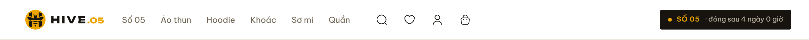
U · lockup dài 125 px, chữ cao 12 px
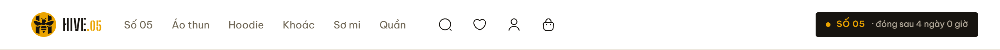
W3 · lockup dài 91 px, chữ cao 16,6 px
U · số .05 trên thanh điều hướng cùng hình với số 05 trên bìa
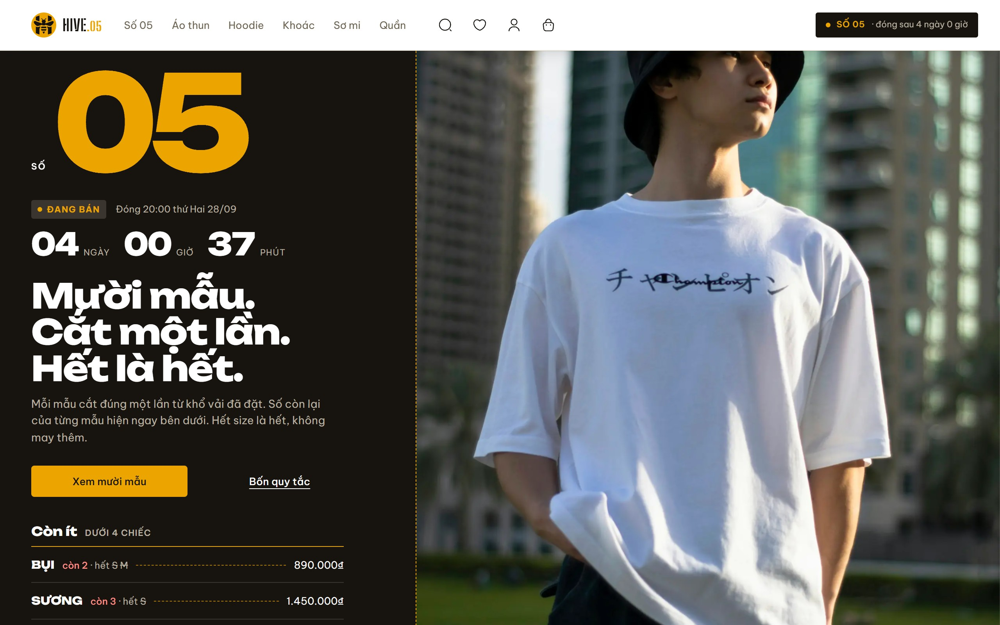
W3 · logo đứng riêng một giọng: hẹp, cạnh bìa rộng và đậm
Trên điện thoại
Thanh điều hướng điện thoại cao 56 px, chứa logo, nhãn Số và bốn nút. Đây là chỗ "hơi to" thành vấn đề thật.
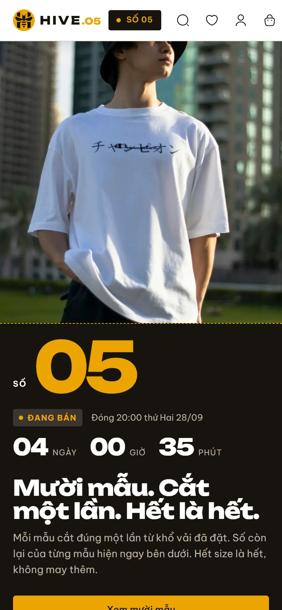
U, 390 px · thiếu 3 px: nút giỏ bị đẩy chạm mép phải
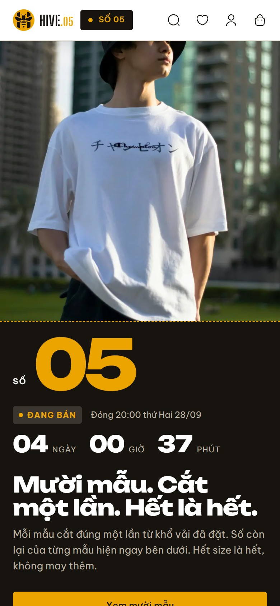
W3, 390 px · thừa 27 px
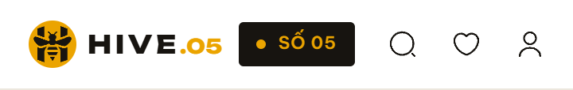
U, 360 px · thiếu 33 px: nút giỏ bị cắt mất
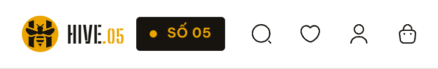
W3, 360 px · vừa khít, thừa 0 px
Nếu thanh điều hướng bỏ ".05"
Ngay cạnh logo đã có nhãn SỐ 05, và bìa có số 05 cỡ lớn. Vì vậy trên thanh điều hướng, logo có thể chỉ gồm mark và
chữ HIVE. Lockup đủ HIVE.05 để dành cho những nơi không có số nào khác: ảnh chia sẻ, bao bì, nhãn.
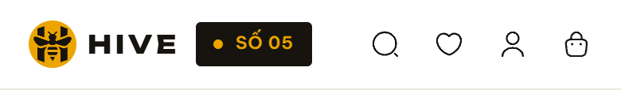
U, 390 px · thừa 16 px
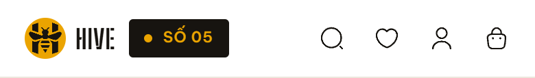
W3, 390 px · thừa 45 px
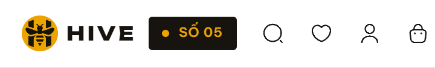
U, 360 px · thiếu 6 px
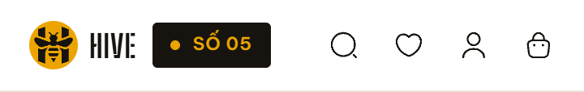
W3, 360 px · thừa 15 px
Tóm lại
U · Unbounded
W3 · Stencil
Nét dày / chiều cao chữ
31% (bản ChatGPT cũ: 34%)
13,5%
HIVE.05 dài / chiều cao chữ
7,1 lần
3,0 lần
Điện thoại 390, đủ .05
thiếu 3 px
thừa 27 px
Điện thoại 360, đủ .05
thiếu 33 px
vừa khít
Số trên logo và số trên bìa
cùng một hình
hai hình khác nhau
Ở cỡ thanh điều hướng
đậm, rõ
khe chữ H còn thấy; khe chữ E và V nhỏ hơn 1 px, gần như liền
Đề xuất: W3. Nó sửa đúng hai điểm bạn chê ở bản cũ: nét nhẹ chưa tới một nửa U, và có nét riêng thay vì
trông như font đậm phổ thông. Nó cũng gọn nhất trên điện thoại. U chỉ hơn ở một điểm: số .05 trên logo khớp số trên bìa. Đổi lại,
U đậm gần bằng bản cũ, đẩy nút giỏ chạm mép ở 390 px và cắt mất nó ở 360 px.